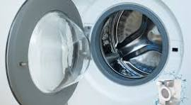
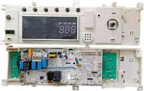
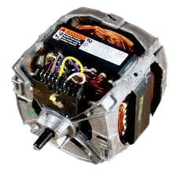
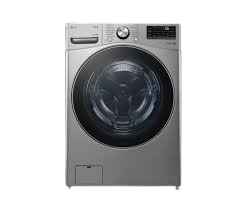
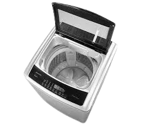

Partes Principales de una Lavadora
Tambor
El tambor es donde se coloca la ropa. Está diseñado con agujeros para permitir el paso del agua y cuenta con paletas para mover la ropa durante el lavado.
Características principales:
- Fabricado en acero inoxidable
- Perforaciones calculadas científicamente
- Paletas especialmente diseñadas
- Capacidad variable según modelo
Panel de Control
Interfaz donde se seleccionan los programas de lavado, temperatura, velocidad de centrifugado y otras opciones.
Funciones comunes:
- Selección de temperatura
- Control de velocidad de centrifugado
- Programas preestablecidos
- Opciones de lavado especiales
- Temporizador y retraso de inicio
Motor
Componente que genera el movimiento del tambor durante el lavado y centrifugado.
Tipos de motores:
- Motor de inducción tradicional
- Motor Inverter (más eficiente)
- Motor Direct Drive (transmisión directa)
Componentes Adicionales
Sistema de Agua
- Válvulas de entrada de agua
- Sistema de drenaje
- Bomba de desagüe
- Filtro de residuos
Sistema Eléctrico
- Termostato
- Sensores de nivel de agua
- Placa de control electrónica
- Sistema de seguridad
Historia de las Lavadoras
1797
Primera lavadora manual patentada por Nathaniel Briggs en New Hampshire, EE.UU. Consistía en una tabla de madera con superficie acanalada donde se frotaba la ropa.
1851
James King patenta la primera máquina lavadora con tambor. Esta innovación permitía girar la ropa dentro de un contenedor con agua jabonosa.
1858
Hamilton Smith patenta la primera lavadora rotativa, mejorando significativamente la eficiencia del lavado.
1908
Primera lavadora eléctrica comercial por la Hurley Machine Company. La "Thor" revolucionó el mercado al automatizar el proceso de lavado.
1937
Bendix Home Appliances introduce la primera lavadora automática doméstica, iniciando la era moderna de las lavadoras.
1950s
Popularización de las lavadoras automáticas en hogares. Se introducen mejoras como ciclos programables y sistemas de seguridad.
1990s - Presente
Desarrollo de lavadoras eficientes energéticamente, con sistemas computerizados y tecnologías eco-amigables.
Tipos de Lavadoras
Carga Frontal
La puerta está en el frente. Son más eficientes en el uso de agua y energía. Ideales para espacios reducidos.
Ventajas:
- Mayor eficiencia energética
- Mejor acción mecánica de lavado
- Menor consumo de agua
- Posibilidad de instalación bajo encimera
Desventajas:
- Precio más elevado
- Ciclos más largos
- No se puede añadir ropa durante el ciclo
Carga Superior
La puerta está en la parte superior. Son más ergonómicas y suelen ser más económicas.
Ventajas:
- Más ergonómicas para cargar y descargar
- Precio más accesible
- Ciclos más cortos
- Posibilidad de añadir ropa durante el ciclo
Desventajas:
- Mayor consumo de agua
- Menor eficiencia energética
- Requieren más espacio vertical
Consejos de Mantenimiento
Mantenimiento Regular
- Limpiar el tambor mensualmente
- Revisar y limpiar filtros
- Mantener la puerta abierta después de usar
- Verificar mangueras y conexiones
Consejos de Uso
- No sobrecargar la lavadora
- Usar detergente adecuado
- Separar ropa por colores y tejidos
- Revisar bolsillos antes de lavar
Guia para usar la lavadora
Precios de lavadoras
| Precio de la lavadora | tipo de lavadora | imagen de la lavadora |
|---|---|---|
| 2,581 Bs. | Lavadora Automática |  |
| 2,570 Bs. | Lavadora Automática |  |
| 1,899 Bs. | Lavadora Semi-Automática |  |
| 3,500 Bs. | Lavadora Inteligente |  |
| 5,291 Bs. | Lavadora de Carga Frontal |  |
| 5,798 Bs. | Lavadora de agua fría-caliente |  |